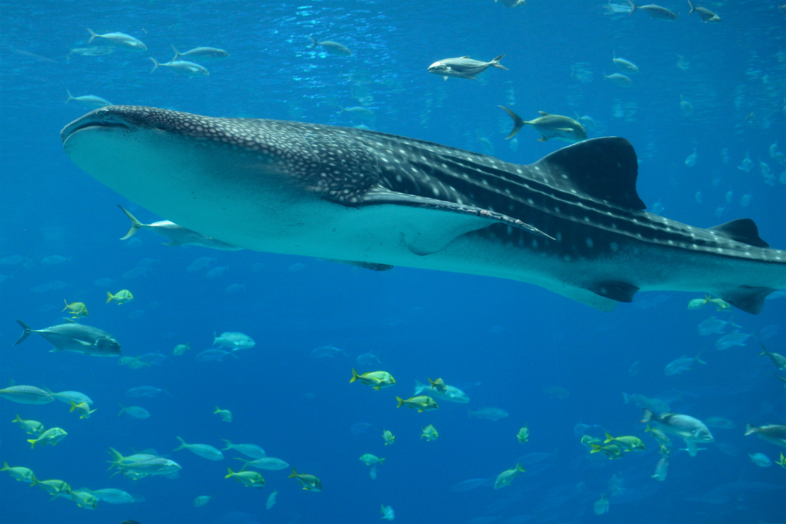

Alimentación del tiburon ballena.

¿Qué come el tiburón ballena?
La cavidad bucal de un tiburón ballena es tan grande que podría caber una foca, a pesar de ello, esta especie de pez se alimenta de pequeñas formas de vida, sobre todo de krill, fitoplancton y algas, aunque también puede consumir pequeños crustáceos, como calamares y larvas de cangrejo, y pequeños peces, como por ejemlo sardinas, caballa, atún y anchovetas.
El tiburón ballena consumirá cada día una cantidad de alimento igual al 2% de su masa corporal. No obstante, también puede pasar algunos períodos sin comer, ya que posee un sistema de reserva de energía.
Es una de las tres especies de tiburones que se alimentan mediante un mecanismo de filtración del agua, junto con el tiburón peregrino (Cetorhinus maximus) y el tiburón boquiancho (Megachasma pelagios). Se alimenta principalmente de fitoplancton, necton, macro algas, y kril, pero a veces también lo hace de crustáceos, como larvas de cangrejo, calamares, y bancos de peces pequeños, como las anchovetas, sardinas, caballa, y atún.
|